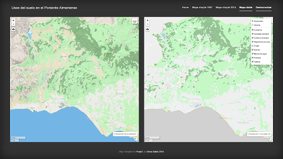

Cobertura del suelo en el Poniente Almeriense
Home
Mapa 1987

Cover your page.
Map Template for
Project
, by
Elena Salido 2016
 Cobertura del suelo en el Poniente Almeriense
Cobertura del suelo en el Poniente Almeriense